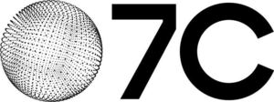

Trade Mark Journal No.2026/009 27 February 2026
WO0000001898582 (35,37,42)
Office of origin: Australia
Date of International Registration:31 October 2025
Date of designation in the UK:
31 October 2025

International priority date claimed: 18 July 2025
(Australia)
(2568318)
- Class 35
- Advertising; marketing; marketing analysis; brand consultancy services; brand strategy services; brand marketing and management services; business management; business administration; office functions; business consultancy; business consultancy, advisory, information and research services; business management and organisation consultancy; business consultancy and advisory services in relation to architecture, interior design, urban design services, project management and sustainable business solutions; arranging, organising and conducting of exhibitions, fairs, talks, trade business events, debates and discussions for business purposes; collection and compilation of data; provision of information, advice and consultancy services (including online) relating to all the aforesaid.
- Class 37
- Building construction; repair, installation and maintenance services of buildings, building constructions, building installations, building equipment and construction equipment; building construction supervision; building project management [construction supervision]; real estate development [building and construction services]; advisory services relating to building construction materials; advisory services relating to construction; provision of information, advice and consultancy services (including online) relating to all the aforesaid.
- Class 42
- Scientific and technological services and research and design relating thereto; industrial analysis and research services; design and development of computer hardware and software; architecture; architecture consultancy services; architecture design services; architecture services for the preparation of architectural plans; architectural services for virtual buildings in virtual environments; computer aided design services relating to architecture; research relating to architecture and design; civil engineering design services; advisory and consultancy services relating to interior design and urban design; industrial design; design of interior decor; software as a service [SaaS]; platform as a service [PaaS]; AI as a service [AIaaS]; providing temporary use of non-downloadable software; providing online non-downloadable computer-aided design software and building information modelling software for architects and interior architects, landscape architects and designers, urban planners, lighting and entertainment designers, and product and furniture designers; environmental engineering, testing and monitoring services; technical consultancy in the field of environmental technology; artificial intelligence consultancy; research in the field of artificial intelligence technology; technological consultancy in the field of environmental sustainability; provision of information, advice and consultancy services (including online) relating to all the aforesaid.
7C Holdings Pty Ltd
Representative: Ashfords LLP, Ashford House, Grenadier Road Exeter Devon EX1 3LH UNITED KINGDOM